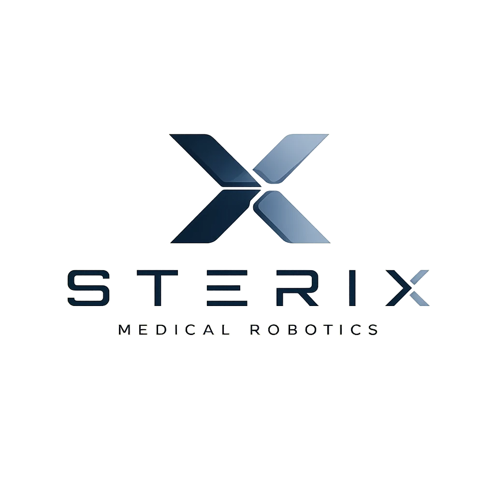

Investor Pitch · 2026

The hospital operating system and robotics platform.
Investor Pitch · 2026

The hospital operating system and robotics platform.
↓Space Next slide
↑ Previous slide
Home First · End Last
F Fullscreen · ? Help
Scroll wheel · trackpad swipe · touch swipe all work.